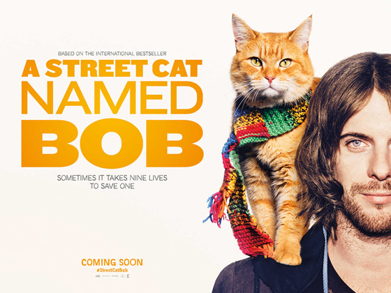
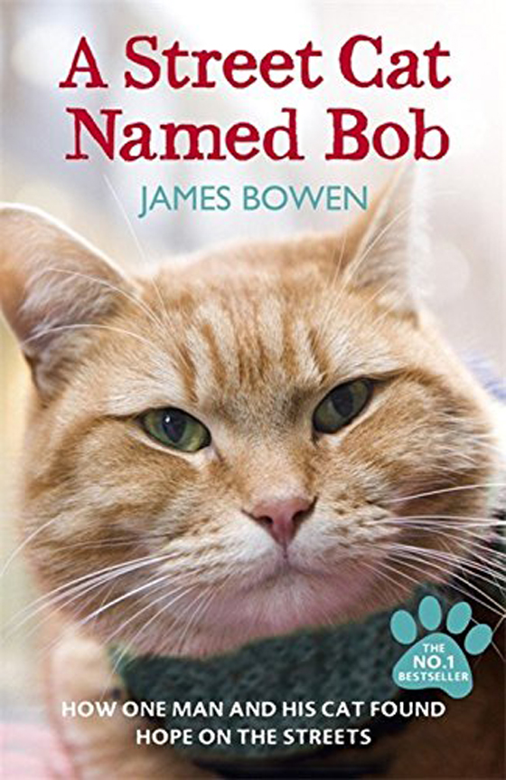

A Street Cat Named Bob 2016
토욜날 보고왔습니다 :)
예전에 코벤트가든서 버스킹하던거 자주 구경했었는데 일케 영화도 나오네요
Bob 쓰담쓰담 해봤다능!!!! (자랑 ㅋㅋ)
저의 약 4년간의 퇴근길이 피카딜리 서커스에서 레스터스퀘어 -> 코벤트 가든을 지나 홀본까지 걸어가서 피카딜리 라인을 타는 일상이었던지라
익숙한 거리와 가게들이 스크린에 나오니까 늠 신기했어요 :)
고양이의 연기가 훌륭했습니다 ㅋㅋㅋㅋㅋ
인터넷 평점이 별 두개라 ㅋㅋㅋㅋ 촘 걱정했는데 즐겁게 잘 보고왔습니다
영화관내 관객들 거진 고양이 덕후들인지 걍 Bob이 등장할때마다 awwww~~~~ 라고 탄성이 여기저기서 ㅋㅋㅋㅋㅋ
고양이의 시선으로 카메라를 비춰주는게 귀여웠어요 :)
확실히 책을 읽지 않은 사람이라던가 아무정보 없이 보러 온 사람에겐 심심한 영화입니다

책 내용중 좀 놀랐던건
멀쩡히 부모님 다 살아있고 어디서 무얼 하는지 알아도 / 그리고 그 부모가 뉴스에 나올만큼 막장이 아니라도 홈리스가 될 수 있구나... 싶은거랑
작가 표현중 홈리스는 공기와 다름없다는 말 / 거리에서 구걸, 버스킹을 하면 똑바로 일해서 먹고살으라고 시비거는 샐러리맨이 많다는게 촘 충격이었습니당;;
이거시 실제 인물 James Bowen & Bob 사진
영화 막판에 카메오로 출연하는데 너무 수줍어해서 빵터짐 ㅋㅋㅋㅋㅋㅋㅋㅋㅋ
잼나게 잘 보고 왔습니다 :D :D :D
뿌듯하다!! :D :D
*인터넷 찾아보니 한국도 1월에 개봉예정이라 하네욤
내 어깨위 고양이 밥 - 이란 제목으로 :)